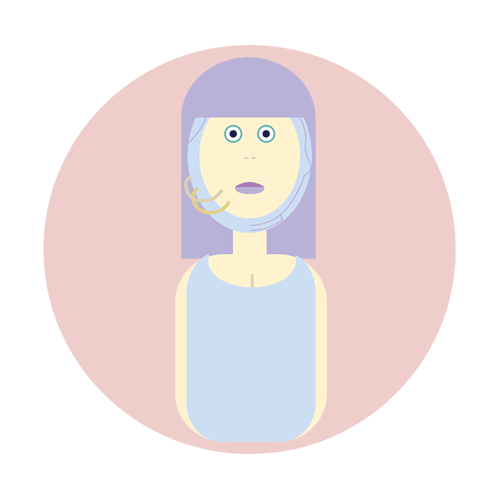

Bem-vindo(a)!
Por favor ative o som.
Qualquer dúvide contacte-me
para o meu email
.
Ajuda
Quem é o Pierre?
O que sabes tu sobre criatividade?
Achas que as maquinas são criativas?
Conta-me uma piada

Pode escrever
Olá
Enviar